आप किस आधार पर यह कह सकते हैं कि स्कैन्डियम (Z = 21) एक संक्रमण तत्व है परंतु ज़िंक (Z = 30) नहीं?
इसलिए इसे संक्रमण तत्व माना जाता है।
ज़िंक में मूल अवस्था और ऑक्सीकृत अवस्था, दोनों में 3 d कक्षक पूर्ण भरित ( 3 d10 ) होता है।
इसलिए इसे संक्रमण तत्व नहीं माना जाता।
संक्रमण तत्व कणन एन्थैल्पी के उच्च मान क्यों दर्शाते हैं?
इसलिए परमाणुओं के बीच प्रबल अंतरापरमाण्विक अन्योन्य क्रिया होती है।
इससे परमाणुओं के बीच प्रबल आबंध बनता है।
इसी कारण कणन एन्थैल्पी का मान उच्च होता है।
ऐसे संक्रमण तत्त्व का नाम बताइए जिसमें परिवर्तनीय ऑक्सीकरण अवस्थाएं नहीं पाई जातीं।
Cr2+ अपचायक है जबकि Mn3+ ऑक्सीकारक, जबकि दोनों का d4 विन्यास है, क्यों?
इसमें अर्ध-भरित t2 g स्तर बनता है (एकक 5 देखें)।
दूसरी ओर, Mn3+ से Mn2+ में परिवर्तन से अर्धभरित ( d5 ) विन्यास मिलता है, जो इसे अतिरिक्त स्थायित्व देता है।
आप श्रेणी VO2+<Cr2 O72-<MnO4-में ऑक्सीकारक क्षमता में वृद्धि को कैसे स्पष्ट करेंगे?
संक्रमण धातुओं की प्रथम श्रेणी के E⊖ के मान है-
| E⊖ | V | Cr | Mn | Fe | Co | Ni | Cu |
|---|---|---|---|---|---|---|---|
| (M2+ / M) | -1.18 | -0.91 | -1.18 | -0.44 | -0.28 | -0.25 | +0.34 |
इसे आयनन एन्थैल्पी में अनियमित परिवर्तन (Δi H1+Δi H2) से समझा जा सकता है।
साथ ही, उर्ध्वपातन एन्थैल्पी भी इसका एक कारण है, जो मैंगनीज और वैनेडियम के लिए अपेक्षाकृत बहुत कम होती है।
Mn3+ / Mn+2 युग्म के लिए E⊖ का मान Cr3+ / Cr2+ अथवा Fe3+ / Fe2+ के मानों से बहुत अधिक धनात्मक क्यों होता है? समझाइए।
इसी से यह भी स्पष्ट होता है कि Mn की +3 अवस्था अधिक महत्त्वपूर्ण क्यों नहीं है।
जलीय विलयन में द्विसंयोजी आयन के चुंबकीय आघूर्ण की गणना कीजिए; यदि इसका परमाणु क्रमांक 25 है।
ऑक्सीकरण अवस्था के 'असमानुपातन' का क्या अर्थ है? एक उदाहरण दीजिए।
उदाहरण के लिए, अम्लीय माध्यम में मैंगनीज़ की ऑक्सीकरण अवस्था (VI), मैंगनीज़ (VII) तथा मैंगनीज़ (IV) की तुलना में कम स्थायी है।
लैन्थेनॉयड श्रेणी के एक सदस्य का नाम बतलाइए जो +4 ऑक्सीकरण अवस्था दर्शाता है।
निम्नलिखित के इलेक्ट्रॉनिक विन्यास लिखिए-
या [Rn] 6 d2, 7 s2
+3 ऑक्सीकरण अवस्था में ऑक्सीकृत होने के संदर्भ में Mn2+ के यौगिक Fe2+ के यौगिकों की तुलना में अधिक स्थायी क्यों हैं?
Fe2+ यौगिक अपेक्षाकृत कम स्थाई हैं।
इसका कारण यह है कि इनके d-कक्षकों में 6 इलेक्ट्रॉन होते हैं।
इसलिए ये एक इलेक्ट्रॉन खोकर Fe3+ यौगिक बनाते हैं और स्थाई विन्यास 3 d5 प्राप्त कर लेते हैं।
संक्षेप में स्पष्ट कीजिए कि प्रथम संक्रमण श्रेणी के प्रथम अर्धभाग में बढ़ते हुए परमाणु क्रमांक के साथ +2 ऑक्सीकरण अवस्था कैसे अधिक स्थायी होती जाती है?
| + 2 अवस्था में तत्व | 21 Sc2+ | 22 Ti2+ | 23 U2+ | 24 Cr2+ | 25 Mn2+ |
|---|---|---|---|---|---|
| इलेक्ट्रॉनिक विन्यास | 3 d1 | 3 d2 | 3 d3 | 3 d4 | 3 d5 |
धनायनों का परमाणु क्रमांक बढ़ने के साथ खाली 3d-कक्षकों की संख्या घटती जाती है।
साथ ही 3d-कक्षकों में अयुग्मित इलेक्ट्रॉनों की संख्या बढ़ती जाती है।
इसलिए धनायनों का स्थायित्व Sc2+ से Mn2+ तक बढ़ता जाता है।
प्रथम संक्रमण श्रेणी के तत्वों के इलेक्ट्रॉनिक विन्यास किस सीमा तक ऑक्सीकरण अवस्थाओं को निर्धारित करते हैं? उत्तर को उदाहरण देते हुए स्पष्ट कीजिए।
उदाहरण (1)
Mn2+ = [Ar] 3 d5 (अधिक स्थाई)
Mn3+ = [Ar] 3 d4
Mn4+ = [Ar] 3 d3
Cu+ = [Ar] 3 d10 (अधिक स्थाई)
Cu2+ = [Ar] 3 d9
इसलिए यह अधिक स्थाई है।
इसी प्रकार Cu+ आयन भी सममित है और इसके d-कक्षक पूर्ण भरित हैं।
इसलिए यह भी अधिक स्थाई है।
संक्रमण तत्वों की मूल अवस्था में नीचे दिए गए d इलेक्ट्रॉनिक विन्यासों में कौन-सी ऑक्सीकरण अवस्था स्थायी होगी? 3 d3, 3 d5, 3 d8 तथा 3 d4
3 d3 : वैनेड़ियम (3 d3 4 s2) : ऑक्सीकरण अवस्थाएँ +2,+3,+4 तथा +5
3 d5 : क्रोमियम (3 d5 4 s1) : ऑक्सीकरण अवस्थाएँ +3,+4 तथा +6
3 d5 : मैंग्नीज़ (3 d5 4 s2) : ऑक्सीकरण अवस्थाएँ +2,+4,+6,+7
3 d8 : कोबाल्ट (3 d7 4 s2) : ऑक्सीकरण अवस्थाएँ +2 तथा +3 (संकुलों में) (Co वर्ग 9 में है)।
3 d4 : मूल अवस्था में यह विन्यास नहीं पाया जाता है।
प्रथम संक्रमण श्रेणी के ऑक्सो-धातुॠणायनों का नाम लिखिए; जिसमें धातु संक्रमण श्रेणी की वर्ग संख्या के बराबर ऑक्सीकरण अवस्था प्रदर्शित करती है।
[TiO3]2-; वर्ग संख्या = ऑक्सीकरण अवस्था, Ti = 4
[VO3]; वर्ग संख्या = ऑक्सीकरण अवस्था, V = 5
[Cr2 O7]2-; वर्ग संख्या = ऑक्सीकरण अवस्था, Cr = 6
[CrO4]2-; वर्ग संख्या = ऑक्सीकरण अवस्था, Cr = 6
[MnO4]-; वर्ग संख्या =ऑक्सीकरण अवस्था, Mn = 7
लैन्थेनॉयड आकुंचन क्या है? लैन्थेनॉयड आकुंचन के परिणाम क्या हैं?
इसे ही लैन्थेनॉयड आकुंचन कहते हैं।
इसका कारण यह है कि नाभिक में प्रत्येक प्रोटॉन बढ़ने के साथ उसका संगत इलेक्ट्रॉन 4f-कक्षकों में जाता है।
एक 4 f-इलेक्ट्रॉन का दूसरे 4 f-इलेक्ट्रॉन पर परिरक्षण प्रभाव कम होता है।
इसलिए नाभिकीय आवेश और बाह्यतम इलेक्ट्रॉन के बीच नेट वैद्युत आकर्षण बल बढ़ जाता है।
इस वजह से परमाणु और आयनिक त्रिज्या का मान घट जाता है।
(i) ऑक्साइडों तथा हाइड्रॉक्साइडों का क्षारीय लक्षण: लैन्थेनॉयड आकुंचन के कारण La-OH आबंध की सहसंयोजक प्रकृति बढ़ती है।
इस वजह से ऑक्साइडों तथा हाइड्रॉक्साइडों के क्षारीय गुण La(OH)3 से Lu(OH)3 तक घटते जाते हैं।
(ii) द्वितीय तथा तृतीय संक्रमण श्रेणी के तत्वों के आकार में समानता: लैन्थेनॉयड आकुंचन के कारण तृतीय संक्रमण श्रेणी के तत्वों की त्रिज्याएँ लगभग वही होती हैं जो द्वितीय संक्रमण श्रेणी के संगत तत्वों की होती हैं।
इसलिए Zr / Hf, Nb / Ta तथा Mo / W ये सभी युगल लगभग समान आकार के होते हैं।
समान आकार के कारण इनके भौतिक तथा रासायनिक गुणों में बहुत समानता पाई जाती है।
इस वजह से इन्हें अलग करना कठिन हो जाता है।
(iii) लैन्थेनॉयडों का पृथक्करण: लैन्थेनॉयड आकुंचन के कारण लैन्थेनॉयडों के कुछ गुणों, जैसे विलेयता और संकुल बनाना, में अन्तर होता है।
इन्हीं भिन्नताओं के कारण आयन विनिमय विधि से लैन्थेनॉयडों को सफलतापूर्वक अलग किया जा सकता है।
संक्रमण धातुओं के अभिलक्षण क्या हैं? ये संक्रमण धातु क्यों कहलाती हैं? d-ब्लॉक के तत्वों में कौन से तत्व संक्रमण श्रेणी के तत्व नहीं कहे जा सकते?
इनके गलनांक भी उच्च होते हैं।
इसलिए श्रेणी में बाएँ से दाएँ जाने पर हर संक्रमण श्रेणी के तत्वों की आयनन एन्थैल्पी बढ़ती जाती है।
उदाहरण, प्रथम संक्रमण श्रेणी -
| Sc | Ti | V | Cr | Mn | Fe | Co | Ni | Cu | Zn |
|---|---|---|---|---|---|---|---|---|---|
| +3 | +2 | +2 | +2 | +2 | +2 | +2 | +2 | +1 | +2 |
| +3 | +3 | +3 | +3 | +3 | +3 | +3 | +2 | ||
| +4 | +4 | +4 | +4 | +4 | +4 | +4 | |||
| +5 | +5 | +5 | |||||||
| +6 | +6 | +6 | |||||||
| +7 |
यह प्रवृत्ति धातुओं की प्रथम और द्वितीय आयनन एन्थैल्पी के योग में हुई सामान्य वृद्धि से जुड़ी है।
उदाहरण, Mn3+ बैंगनी; Fe2+ हरा, आदि।
उदाहरण, [PtCl4]2-
उदाहरण, V2 O5 (संस्पर्श प्रक्रम में (H2 SO4 के निर्माण में), सूक्ष्म विभाजित आयरन (हैबर प्रक्रम में NH3 के निर्माण में), आदि।
इसका अर्थ है कि धातुओं के क्रिस्टल जालक के भीतर H, N या C जैसे छोटे आकार वाले परमाणु समा जाते हैं।
इस तरह बनी मिश्र-धातु कठोर होती है और उसका गलनांक भी उच्च होता है।
असंक्रमण धातुओं तथा संक्रमण धातुओं के संयोग से बनी मिश्र-धातुएँ औद्योगिक महत्व की होती हैं।
उदाहरण, पीतल (कॉपर-जिंक)।
संक्रमण धातुओं के इलेक्ट्रॉनिक विन्यास किस प्रकार असंक्रमण तत्वों के इलेक्ट्रॉनिक विन्यास से भिन्न हैं?
असंक्रमण तत्वों में, d-कक्षक अनुपस्थित होते हैं या पूर्ण भरित होते हैं।
ये तत्व n s1-2 या n s2 n p1-6 प्रकार का इलेक्ट्रॉनिक विन्यास रखते हैं।
लैन्थेनॉयडों द्वारा कौन-कौन सी ऑक्सीकरण अवस्थाएं प्रदर्शित की जाती हैं?
कारण देते हुए स्पष्ट कीजिए-
हर अयुग्मित इलेक्ट्रॉन का चुंबकीय आघूर्ण प्रचक्रण कोणीय संवेग और कक्षीय कोणीय संवेग से जुड़ा होता है।
इसी कारण संक्रमण धातुएं अनुचुंबकीय होती हैं।
(ii) इनके परमाणुओं में अयुग्मित इलेक्ट्रॉनों की संख्या अधिक होती है।
इसी कारण इनकी कणन एन्थैल्पी उच्च होती है।
इनके परमाणुओं के बीच प्रबल अंतरापरमाण्विक अन्योन्य क्रियाएं होती हैं, जिससे इनके बीच मजबूत आबंधन बनता है।
(iii) संक्रमण धातुएं दृश्य प्रक्षेत्र के प्रकाश का कुछ भाग अवशोषित कर लेती हैं, इसी कारण इनके यौगिक रंगीन बनते हैं।
इलेक्ट्रॉन दृश्य प्रक्षेत्र की एक विशिष्ट आवृत्ति वाला विकिरण अवशोषित करता है और उच्च ऊर्जा वाले d-कक्षक में चला जाता है।
(iv) उत्प्रेरक के ठोस पृष्ठ पर अभिकारक के अणु और उत्प्रेरक की सतह के परमाणु आपस में आबंध बनाते हैं।
(आबंध बनाने के लिए प्रथम संक्रमण श्रेणी की धातुएं 3d- एवं 4s' इलेक्ट्रॉनों का उपयोग करती हैं।
इसके परिणामस्वरूप उत्प्रेरक की सतह पर अभिकारक की सांद्रता बढ़ जाती है, और अभिकारक के अणुओं में मौजूद आबंध कमजोर हो जाते हैं, जिससे सक्रियण ऊर्जा का मान घट जाता है।
संक्रमण धातुओं के आयन परिवर्ती ऑक्सीकरण अवस्थाएं दर्शाते हैं, इसीलिए ये प्रभावी उत्प्रेरक हैं।
इस उत्प्रेरकीय अभिक्रिया की क्रियाविधि इस प्रकार है-
(a) 2 Fe3++2 I- → 2 Fe2++I2
(b) 2 Fe2++S2 O82- → 2 Fe3++2 SO42-
अंतराकाशी यौगिक क्या हैं? इस प्रकार के यौगिक संक्रमण धातुओं के लिए भली प्रकार से ज्ञात क्यों हैं?
इनमें H, N या C जैसे छोटे आकार वाले परमाणु समा जाते हैं।
ऐसे यौगिकों को अंतराकाशी यौगिक कहते हैं।
ये यौगिक संक्रमण धातुओं के लिए भली प्रकार से ज्ञात हैं, क्योंकि छोटे परमाणु आसानी से इनके जालक में अपना स्थान ले लेते हैं।
संक्रमण धातुओं की ऑक्सीकरण अवस्थाओं में परिवर्तनशीलता असंक्रमण धातुओं में ऑक्सीकरण अवस्थाओं में परिवर्तनशीलता से किस प्रकार भिन्न है? उदाहरण देकर स्पष्ट कीजिए।
इसका कारण अपूर्ण d-कक्षकों में इलेक्ट्रॉनों का क्रमशः प्रवेश करना है।
उदाहरण के लिए, यह +2, +3, +4, +5, +6 तथा +7 ऑक्सीकरण अवस्थाएं दर्शाता है, और इन सभी में एक का अंतर है।
असंक्रमण तत्वों में, विभिन्न ऑक्सीकरण अवस्थाओं में सामान्यतः दो का अंतर पाया जाता है।
जैसे- सल्फर 2,4,6 ऑक्सीकरण अवस्थाएं दर्शाती है तथा नाइट्रोजन 3,5 आदि।
आयरनक्रोमाइट अयस्क से पोटैशियम डाइक्रोमेट बनाने की विधि का वर्णन कीजिए।
पोटैशियम डाइक्रोमेट विलयन पर pH बढ़ाने से क्या प्रभाव पड़ेगा?
इससे क्रोमेट प्राप्त होता है।
इससे नारंगी रंग के सोडियम डाइक्रोमेट के क्रिस्टल प्राप्त होते हैं।
पोटैशियम डाइक्रोमेट की ऑक्सीकरण क्रिया का उल्लेख कीजिए तथा निम्नलिखित के साथ आयनिक समीकरण लिखिए-
अम्लीय माध्यम में यह इस प्रकार ऑक्सीकरण करता है-
पोटैशियम परमैंगनेट को बनाने की विधि का वर्णन कीजिए।
अम्लीय पोटैशियम परमैंगनेट किस प्रकार-
इससे गहरे हरे रंग का उत्पाद K2 MnO4 प्राप्त होता है, जो उदासीन या अम्लीय माध्यम में असमानुपातित होकर पोटैशियम परमैंगनेट देता है।
(i) 2 MnO2+4 KOH+O2 KNO3→ 2 K2 MnO4+2 H2 O
(ii) 3 MnO42-+4 H+ → 2 MnO4-+MnO2+2 H2 O
पोटैशियम परमैंगनेट
समीकरण (i) तथा (ii) से
समीकरण (i) तथा (iii) से
समीकरण (i) तथा (iv) से
M2+ / M तथा M3+ / M2+ निकाय के संदर्भ में कुछ धातुओं के E⊖ के मान नीचे दिए गए हैं।
Cr2+ / Cr
-0.9 V
Cr3 / Cr2+
-0.4 V
Mn2+ / Mn
-1.2 V
Mn3+ / Mn2+
+1.5 V
Fe2+ / Fe
-0.4V
Fe3+ / Fe2+
+0.8 V
उपरोक्त आँकड़ों के आधार पर निम्नलिखित पर टिप्पणी कीजिए-
यह Cr3+ आयन के स्थायित्व को दर्शाता है।
अर्थात विलयन में Cr3+ आयन, Cr2+ आयनों में अपचयित नहीं हो सकते हैं।
Mn3+ का E° मान उच्च धनात्मक है।
इसलिए यह Fe3+ से Fe2+ में बदलने की तुलना में, आसानी से Mn2+ में बदल जाता है।
इस प्रकार विभिन्न आयनों के स्थायित्व का बढ़ता क्रम इस प्रकार है-
निम्नलिखित में कौन से आयन जलीय विलयन में रंगीन होंगे?
Ti3+, V3+, Cu+, Sc3+ Mn2+, Fe3+, Co2+, प्रत्येक के लिए कारण बताइए।
जिन आयनों के संयोजकता कोश में (d10) या खाली (d0) d-कक्षक हैं, वे रंगहीन होते हैं।
| आयन | इलेक्ट्रॉनिक विन्यास | रंग |
|---|---|---|
| Ti3+ | [Ar] 3 d1 | नीललोहित |
| v3+ | [Ar] 3 d2 | हरा |
| Cu+ | [Ar] 3 d10 | रंगहीन |
| Sc3+ | [Ar] | रंगहीन |
| Mn2+ | [Ar] 3 d5 | गुलाबी |
| Fe3+ | [Ar] 3 d5 | पीला |
| Co2+ | [Ar] 3 d7 | नीला गुलाबी |
शेष सभी Ti3+, V3+, Mn2+, Fe3+ तथा Co2+ जलीय विलयन में रंगीन होंगे।
प्रथम संक्रमण श्रेणी की धातुओं की +2 ऑक्सीकरण अवस्थाओं के स्थायित्व की तुलना कीजिए।
निम्नलिखित के संदर्भ में, लैन्थेनॉयड एवं ऐक्टिनॉयड के रसायन की तुलना कीजिए।
| क्र. सं. | लैन्येंनॉयड | ऐक्टिनॉयड |
|---|---|---|
| (i) | इलेक्ट्रॉनिक विन्यास [Xe]54 4 f1-14 5 d0-1 6 s2 उदाहरण, 57 La = [Xe] 5 d1 6 s2 58 Ce = [Xe] 4 f1 5 d1 6 s2 | इलेक्ट्रॉनिक विन्यास [Rn]86 5 f1-14 6 d0-1 7 s2 उदाहरण, 89 Ac = [Rn] 6 d1 7 s2 90 Th = [Rn] 6 d2 7 s2 |
| (ii) | ऑक्सीकरण अवस्थाएँ सामान्य ऑक्सीरण अवस्थाएँ = +3 अन्य ऑक्सीकरण अवस्थाएँ = +2,+4. | ऑक्सीकरण अवस्थाएँ सामान्य ऑक्सीरण अवस्थाएँ = +3 अन्य ऑक्सीकरण अवस्थाएँ = +4,+5,+6, +7. |
| (iii) | परमाण्वीय एवं आयनिक आकार परमाणु/आयन का आकार आवर्त में (बाएँ से दाएँ) घटता है। अपने वर्ग में लैन्थेंनॉयड तत्व का आकार ऐक्टिनॉयड से छोटा होता है। | परमाण्वीय एवं आयनिक आकार परमाणु/आयन का आकार आवर्त में (बाएँ से दाएँ) घटता है। अपने वर्ग में एक्टिनॉयड का आकार सबसे बड़ा है। |
| (iv) | रांसायनिक अभिक्रियाशीलता (a) संकुल बनाने की प्रवृत्ति कम। (b) केवल प्रोमिथियम रेडियोऐक्टिव है। (c) ये ऑक्सोधनायन नहीं बनाते। (d) इनके ऑक्साइड तथा हाइड्रॉक्साइड कम क्षारीय हैं। | रासायनिक अभिक्रियाशीलता (a) संकुल बनाने की प्रवृति प्रबल (b) सभी ऐक्टिनॉयड रेडियोधर्मी हैं। (c) ये ऑक्सोधनायन बनाते हैं जैसे UO22+, PuO22+, UO+, आदि। (d) ऑक्साइड तथा हाइड्रॉक्साइड अधिक क्षारीय हैं। |
आप निम्नलिखित को किस प्रकार से स्पष्ट करेंगे-
Mn3+ / Mn2+ युग्म के लिए यह घनात्मक (+1.57 V) है।
इसका मतलब है कि Cr2+ आयन एक इलेक्ट्रॉन खोकर Cr3+ आयन बन सकता है और अपचायक का काम करता है।
वहीं Mn3+ आयन इलेक्ट्रॉन ग्रहण करके ऑक्सीकारक का काम करता है।
(ii) कोबाल्ट (II) आयन की तुलना में कोबाल्ट (III) आयन में संकुल बनाने की प्रवृत्ति ज़्यादा होती है।
इसलिए कोबाल्ट (II) आयन जलीय विलयन में स्थायी होने पर भी संकुलनकारी अभिकर्मकों की उपस्थिति में कोबाल्ट (III) आयन में बदल जाता है और ऑक्सीकृत हो जाता है।
(iii) d1 विन्यास वाले संक्रमण धातुओं के आयन एक इलेक्ट्रॉन खोकर स्थायी विन्यास d0 पाने की कोशिश करते हैं।
इसलिए ये आयन (d1 आयन) ऑक्सीकरण अभिक्रियाएँ या असमानुपातन अभिक्रियाएँ देते हैं।
इस वजह से ये अस्थायी होते हैं।
असमानुपातन से आप क्या समझते हैं? जलीय विलयन में असमानुपातन अभिक्रियाओं के दो उदाहरण दीजिए।
इसके परिणामस्वरूप दो अलग-अलग उत्पाद बनते हैं।
दूसरे शब्दों में, एक ही पदार्थ किसी एक अणु के लिए ऑक्सीकारक का काम करता है, और उसी समय दूसरे अणु के लिए अपचायक का काम करता है।
(i) 3 MnO42-+4 H+ → (+7)2 MnO4-+(+4)MnO2+2 H2 O
(ii) 3 CrO43-+8 H+ → (+6)2 CrO42-+Cr3++4 H2 O
(i) 4 H3 PO3 → 3 H3 PO4+PH3
(ii) 3 HNO2 → HNO3+H2 O+2 NO
प्रथम संक्रमण श्रेणी में कौन सी धातु बहुधा तथा क्यों +1 ऑक्सीकरण अवस्था दर्शाती है?
इसके बाद यह स्थायी विन्यास 3d10 के साथ Cu+ आयन बनाता है।
इसलिए प्रथम संक्रमण श्रेणी में कॉपर धातु स्थायी विन्यास पाने के लिए +1 ऑक्सीकरण अवस्था दर्शाती है।
निम्नलिखित गैसीय आयनों में अयुगलित इलेक्ट्रॉनों की गणना कीजिए।
Mn3+, Cr3+, V3+ तथा Ti3+ इनमें से कौन सा जलीय विलयन में अतिस्थायी है?
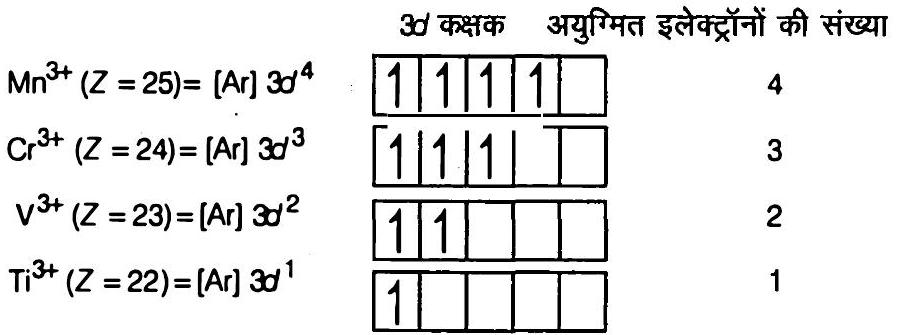
दी गयी स्पीशीज में, सकुंल बनाने की प्रवत्ति के कारण जलीय विलयन में Cr3+ सबसे अधिक स्थायी है।
उदाहरण देते हुए संक्रमण धातुओं के रसायन के निम्नलिखित अभिलक्षणों का कारण बताइए-
उदाहरण के लिए, MnO(Mn = +2 ऑक्सीकरण अवस्था) क्षारीय है, जबकि Mn2 O7(Mn = +7 ऑक्सीकरण अवस्था) प्रकृति से अम्लीय है।
(ii) ऑक्सीजन और फ्लुओरीन उच्च विद्युतऋणात्मक होते हैं, इसलिए ये किसी संक्रमण धातु की ऑक्सीकरण अवस्था को बढ़ा सकते हैं।
कुछ ऑक्साइडों में ऑक्सीजन संक्रमण धातु के साथ बहुआबंध बनाती है, और यही धातु की उच्च ऑक्सीकरण अवस्था के लिए ज़िम्मेदार है।
(iii) ऐसा ऑक्सीजन की उच्च विद्युतऋणात्मकता के कारण होता है।
उदाहरण के लिए, क्रोमियम ऑक्सोऋणायन [CrO4]2- में +6 ऑक्सीकरण अवस्था दिखती है, तथा मैंगनीज़ ऑक्सोऋणायन [MnO4] में +7 ऑक्सीकरण अवस्था दिखती है।
निम्नलिखित को बनाने के लिए विभिन्न पदों का उल्लेख कीजिए -
(ii) अभ्यास के प्रश्न 16 के भाग (i) के समान
मिश्रातुएं क्या हैं? लैन्थेनॉयड धातुओं से युक्त एक प्रमुख मिश्रातु का उल्लेख कीजिए।
इसके उपयोग भी बताइए।
इसे धातुओं और अधातुओं को पिघली हुई (गलित) अवस्था में अच्छी तरह मिलाकर बनाया जाता है।
(iii) इस मिश्रातु की अधिकतर मात्रा मैग्नीशियम आधारित मिश्रातुओं में इस्तेमाल होती है, जो बंदूक की गोली, कवच (शेल) और हल्के फ्लिंट बनाने में काम आती है।
आंतरिक संक्रमण तत्व क्या हैं? बताइए कि निम्नलिखित में कौन से परमाणु क्रमांक आंतरिक संक्रमण तत्वों के हैं -
29, 59, 74, 95, 102, 104
f-ब्लॉक के अधिकांश तत्वों में अंतिम इलेक्ट्रॉन f-उपकोश में जाता है।
59 = [Xe] 6 s2 4 f3 (f-ब्लॉक तत्व तथा आंतरिक संक्रमण तत्व)
74 = [Xe] 6 t1 4 f14 5 d5 (d-ब्लॉक तत्व तथा संक्रमण तत्व)
95 = [Rn] 7 s2 5 f7 6 d0 (f-ब्लॉक तत्व तथा आंतरिक संक्रमण तत्व)
102 = [Rn] 7 s2 5 f14 (f-ब्लॉक तत्व तथा आंतरिक संक्रमण तत्व)
104 = [Rn] 7 s2 5 f14 6 d2 (d-ब्लॉक )
ऐक्टिनॉयड तत्वों का रसायन उतना नियमित नहीं है जितना कि लैन्थेनॉयड तत्वों का रसायन।
इन तत्वों की ऑक्सीकरण अवस्थाओं के आधार पर इस कथन का आधार प्रस्तुत कीजिए।
इनमें ऑक्सीकरण अवस्थाओं का परास बड़ा होता है (+3 से +7 तक)।
यह विभिन्नता 5 f, 6 d और 7 s उपकोशों की ऊर्जा लगभग समान होने के कारण है।
ऐक्टिनॉयडों की ऑक्सीकरण अवस्थाओं में इतनी अनियमितता और विभिन्नता है कि ऑक्सीकरण अवस्थाओं के आधार पर इन तत्वों के रसायन की समीक्षा करना काफी कठिन है।
उदाहरण के लिए, अधिकतम ऑक्सीकरण अवस्थाएँ इस प्रकार हैं:
= +5 Pa में
= +6 U में
= +7 Np में
एक्टिनॉयड श्रेणी का अंतिम तत्व कौन सा है? इस तत्व का इलेक्ट्रॉनिक विन्यास लिखिए।
इस तत्व की संभावित ऑक्सीकरण अवस्थाओं पर टिप्पणी कीजिए।
हुंड-नियम के आधार पर Ce3+ आयन के इलेक्ट्रॉनिक विन्यास को व्युत्पन्न कीजिए तथा 'प्रचक्रण मात्र सूत्र' के आधार पर इसके चुंबकीय आघूर्ण की गणना कीजिए।
= √(1(1+2)) = √(3)
= 1.73 BM
लैन्थेनॉयड श्रेणी के उन सभी तत्वों का उल्लेख कीजिए जो +4 तथा जो +2 ऑक्सीकरण अवस्थाएं दर्शाते हैं।
इस प्रकार के व्यवहार तथा उनके इलेक्ट्रॉनिक विन्यास के बीच संबंध स्थापित कीजिए।
+2 ऑक्सीकरण अवस्था 62 Sm, 63 Eu, 69 Tm तथा 70 Yb में पायी जाती है।
सामान्यतः 5 d0 6 s2 विन्यास वाले तत्व आसानी से दो इलेक्ट्रॉन खोकर +2 ऑक्सीकरण अवस्था दर्शाते हैं।
इसी प्रकार, जो तत्व चार इलेक्ट्रॉन खोकर अपेक्षाकृत स्थायी विन्यास 4 f0 या 4 f7 प्राप्त कर सकते हैं, वे +4 ऑक्सीकरण अवस्था दर्शाते हैं।
निम्नलिखित के संदर्भ में ऐक्टिनॉयड श्रेणी के तत्वों तथा लैन्थेनॉयड श्रेणी के तत्वों के रसायन की तुलना कीजिए।
61,91,101 तथा 109 परमाणु क्रमांक वाले तत्वों का इलेक्ट्रॉनिक विन्यास लिखिए।
प्रोटैक्टिनियम या Pa(Z = 91) = [R n] 5 f2 6 d1 7 s2
मेन्डेलीवियम या M d(Z = 101) = [R n] 5 f13 6 d0 7 s2
मेटनीरियम या Mt(Z = 109) = [Rn] 5 f14 6 d7 7 s2
प्रथम श्रेणी के संक्रमण तत्वों के अभिलक्षणों की द्वितीय एवं तृतीय श्रेणी के वर्गों के संगत तत्वों से क्षैतिज वर्गों में तुलना कीजिए।
निम्नलिखित बिंदुओं पर विशेष महत्व दीजिए-
यद्यपि प्रथम श्रेणी में दो अपवाद हैं।
(a) Cr = 3 d5 4 s1 तथा
(b) Cu = 3 d10 4 s1
द्वितीय संक्रमण श्रेणी में 5 अपवाद हैं।
(a) Mo = 4 d5 5 s1;
(b) Nb = 4 d4 5 s1;
(c) Rh = 4 d8 5 s1
(d) Pd = 4 d10 5 s0
(e) Ag = 4 d10 5 s1
तृतीय संक्रमण श्रेणी में तीन अपवाद हैं।
(a) W = 4 f14 5 d4 6 s2;
(b) Pt = 4 f14 5 d9 6 s1;
(c) Au = 4 f14 5 d10 6 s1
अत्यधिक संख्या में ऑक्सीकरण अवस्थाएँ दर्शाने वाले तत्व संक्रमण श्रेणी के मध्य में या इसके निकट स्थित हैं।
जबकि न्यूनतम अवस्था वाले तत्व श्रेणी के दोनों किनारों पर स्थित हैं।
यद्यपि प्रत्येक श्रेणी में कुछ अपवाद देखें गये हैं।
एक ही वर्ग में, प्रथम (3d) श्रेणी के तत्वों की अपेक्षा द्वितीय (4 d) श्रेणी में कुछ तत्वों की आयनन एन्यैल्पी उच्च होती है तथा उनमें से कुछ की कम होती है।
यद्यपि 3 d तथा 4 d श्रेणियों की अपेक्षा 5 d श्रेणी के तत्वों की आयनन एन्यैल्पी उच्च है।
इसका कारण 5 d श्रेणी में 4 f इलेक्ट्रॉनों का नाभिक से कमजोर परिरक्षण प्रभाव है।
यद्यपि यह ह्रास कम होता है।
परन्तु प्रथम संक्रमण श्रेणी (3d) के तत्वों की तुलना में द्वितीय संक्रमण श्रेणी (4 d) के संगत तत्वों का आकार बड़ा है।
परन्तु संक्रमण श्रेणी (5 d) के तत्वों की त्रिज्याएँ लगभग वही हैं जो द्वितीय संक्रमण श्रेणी के संगत तत्वों की हैं।
इसका कारण लैन्थेनॉयड आकुंचन है।
निम्नलिखित आयनों में प्रत्येक के लिए 3 d इलेक्ट्रॉनों की संख्या लिखिए-
आप इन जलयोजित आयनों (अष्टफलकीय) में पाँच 3 d कक्षकों को किस प्रकार अधिग्रहीत करेंगे? दर्शाइए।
| क्र. सं. | आयन | विन्यास | 3d इलेक्ट्रॉनों की संख्या | 3d-कक्षक में इलेक्ट्रॉनों का जाना | |
|---|---|---|---|---|---|
| (i) | Ti2+ | 3 d2 | 2 | t2 g2 | 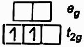 |
| (ii) | v2+ | 3 d3 | 3 | t2 g3 | 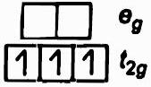 |
| (iii) | Cr3+ | 3 d3 | 3 | t2 g3 | 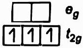 |
| (iv) | Mn2+ | 3 d5 | 5 | t2 g3 eg2 | 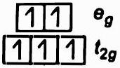 |
| (v) | Fe2+ | 3 d6 | 6 | t2 g4 eg2 | 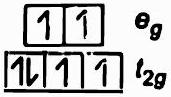 |
| (vi) | Fe3+ | 3 d5 | 5 | t2 g3 eg2 | 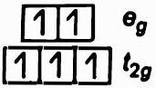 |
| (vii) | Co2+ | 3 d7 | 7 | t2 g5 eg2 | 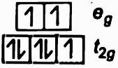 |
| (viii) | Ni2+ | 3 d8 | 8 | t2 g6 eg2 | 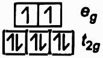 |
| (ix) | Cu2+ | 3 d9 | 9 | t2g6 eg3 | 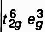 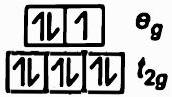 |
प्रथम संक्रमण श्रेणी के तत्व भारी संक्रमण तत्वों के अनेक गुणों से भिन्नता प्रदर्शित करते हैं।
टिप्पणी कीजिए।
3 d संक्रमण तत्वों से इनके गुणों में भिन्नता के निम्न कारण हैं
(i) प्रथम संक्रमण श्रेणी (3 d) के तत्वों की तुलना में इनके संगत भारी संक्रमण तत्वों (द्वितीय संक्रमण श्रेणी, 4 d तथा तृतीय संक्रमण श्रेणी, 5 d ) का परमाण्वीय आकार बड़ा है।
यद्यपि 4 d श्रेणी तथा 5 d श्रेणी के अनुरूप तत्वों की त्रिज्याएँ लगभग समान हैं।
(ii) 3 d श्रेणी तथा 4 d श्रेणी के तत्वों की आयनन एन्यैल्पी की अपेक्षा इनके संगत 5 d श्रेणी के तत्वों की एन्यैल्पी अधिक है।
(iii) 4 d श्रेणी तथा 5 d श्रेणी के तत्वों की कणन एन्थैल्पी इनके संगत 3 d श्रेणी के तत्वों से उच्च होती है।
(iv) भारी संक्रमण तत्वों के क्वथनांक तथा गलनांक 3 d श्रेणी के तत्वों की अपेक्षा उच्च होते हैं।
ऐसा प्रबल अंतरापरमाण्विक धात्विक आबंधन के कारण है।
निम्नलिखित संकुल स्पीशीज़ के चुंबकीय आघूर्णों के मान से आप क्या निष्कर्ष निकालेंगे?
उदाहरण
चुंबकीय आघूर्ण (BM)
K4[Mn(CN)6)
2.2
[Fe(H2 O)6]2+
5.3
K2[MnCl4]
5.9
n = 2, के लिए μ = √(2(2+2)) = √(8) = 2.83 BM
n = 3 , के लिए μ = √(3(3+2)) = √(15) = 3.87 BM
n = 4, के लिए μ = √(4(4+2)) = √(24) = 4.90 BM
n = 5, के लिए μ = √(5(5+2)) = √(35) = 5.92 BM
प्रश्न में दिया गया μ का मान (2.2 BM) एक अयुग्मित इलेक्ट्रॉन की उपस्थिति दर्शाता है।
अतः CN- लिगेण्ड धातु के 3 d-कक्षक में इलेक्ट्रॉनों को युग्मित कर देता है।
इस प्रकार CN- एक प्रबल क्षेत्र लिगेण्ड है।
यह आंतरिक कक्षक अष्टफलकीय संकुल है तथा इसमें धातु की संकरण अवस्था d2 s p3 है।
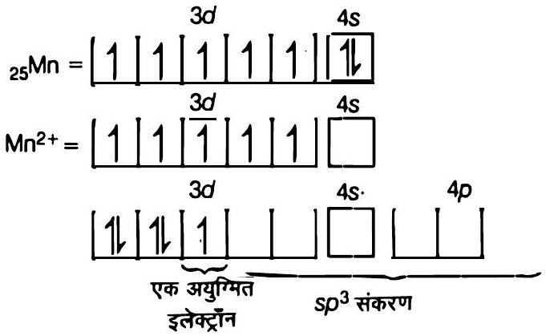
μ = 5.3 BM दर्शाता है कि इसमें चार अयुग्मित इलेक्ट्रॉन हैं।
इसका अर्थ है कि जब लिगेण्ड, H2 O के अणु धातु आयन की तरफ पहुँचते हैं, तो ये 3d-इलेक्ट्रॉनों को युग्मित नहीं करते।
अतः H2 O एक दुर्बल क्षेत्र लिगेण्ड है।
H2 O अणुओं द्वारा दिए गए इलेक्ट्रॉनों को ग्रहण करने के लिए Mn2+ आयन d2 s p3 संकरित हो जाता है।
अतः यह बाह्य कक्षक अष्टफलकीय संकुल है।
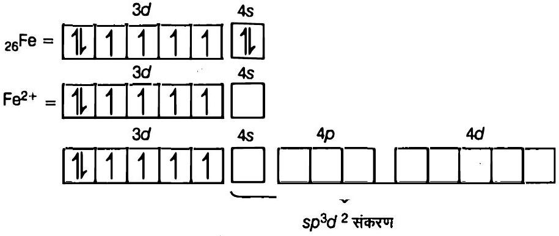
μ = 5.9 BM दर्शाता है कि d-कक्षक में 5 अयुग्मित इलेक्ट्रॉन हैं।
अतः यह संकुल चतुष्फलकीय तथा s p3-संकरित है।
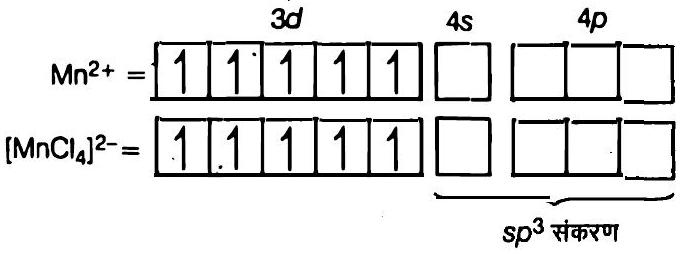
सिल्वर परमाणु की मूल अवस्था में पूर्ण भरित d कक्षक (4 d10) हैं।
आप कैसे कह सकते हैं कि यह एक संक्रमण तत्व है?
परन्तु कुछ यौगिकों में यह +2 ऑक्सीकरण अवस्था भी दर्शाता है अर्थात 4 d9 5 s0 विन्यास।
अतः 4 d-कक्षक अपूर्ण (4 d9) होने के कारण इसे संक्रमण तत्व माना गया है।
श्रेणी, Sc(Z = 21) से Zn(Z = 30) में, ज़िंक की कणन एन्थैल्पी का मान सबसे कम होता है, अर्थात् 126 kJ mol-1; क्यों?
इसलिए d-कक्षक के इलेक्ट्रॉन धात्विक बंधन में भाग नहीं लेते।
श्रेणी के अन्य तत्वों में धात्विक बंध बनाने में d-कक्षक के इलेक्ट्रॉन भाग लेते हैं।
इनकी तुलना में जिंक में अधात्विक बंध दुर्बल है।
यही कारण है कि जिंक की कणन एन्थैल्पी अपनी संक्रमण श्रेणी में सबसे कम है।
संक्रमण तत्त्वों की 3 d श्रेणी का कौन सा तत्व बड़ी संख्या में ऑक्सीकरण अवस्थाएं दर्शाता है एवं क्यों?
यह अपने यौगिकों में सबसे अधिक ऑक्सीकरण अवस्थाएँ दर्शाता है, अर्थात +2 से +7 तक (+2, +3, +4, +5, +6,+7))।
कॉपर के लिए E⊖(M2+ / M) का मान घनात्मक (+0.34 V) है।
इसके संभावित कारण क्या हैं?
(संकेत- इसके उच्च Δa H⊖ और Δhyd H⊖ पर ध्यान दें)
इसका अर्थ है कि आवश्यक Δi H की पूर्ति मुक्त ऊर्जा से नहीं हो पाती।
इसलिए कॉपर के लिए E°(M2+ / M) का मान घनात्मक है।
संक्रमण तत्त्वों की प्रथम श्रेणी में आयनन एन्थैल्पी (प्रथम और द्वितीय) में अनियमित परिवर्तन को आप कैसे समझायेंगे?
सामान्यतः प्रभावी नाभिकीय आवेश बढ़ने के साथ आयनन एन्थैल्पी का मान भी बढ़ता है।
लेकिन क्रोमियम में d-विन्यास में कोई परिवर्तन नहीं होता, इसलिए इसका मान कम होता है।
वहीं Zn के लिए मान उच्च होता है, क्योंकि इसमें आयनन 4 s स्तर से होता है।
d5 और d10 जैसे विन्यास अप्रत्याशित रूप से स्थायी होते हैं, इसलिए इनके लिए आयनन एन्थैल्पी का मान उच्च होता है।
कोई धातु अपनी उच्चतम ऑक्सीकरण अवस्था केवल ऑक्साइड अथवा फ्लुओराइड में ही क्यों प्रदर्शित करती है?
इसलिए ये अपने यौगिकों (ऑक्साइड व फ्लुओराइड) में धातु को उसकी उच्चतम ऑक्सीकरण अवस्था तक ऑक्सीकृत कर देती हैं।
Cr2+ और Fe2+ में से कौन प्रबल अपचायक है और क्यों?
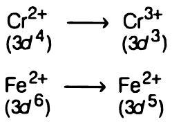
इसलिए Fe2+ की तुलना में Cr2+ प्रबल अपचायक है, क्योंकि इसका स्वयं आसानी से ऑक्सीकरण हो जाता है।
M2+(aq) ion (Z = 27) के लिए 'प्रचक्रण-मात्र' चुंबकीय आघूर्ण की गणना कीजिए।
M2+ का इलेक्ट्रॉनिक विन्यास = [Ar] 3 d7
या
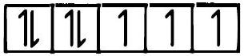
प्रचक्रण मात्र सूत्र से
स्पष्ट कीजिए कि Cu+आयन जलीय विलयन में स्थायी नहीं है, क्यों? समझाइए।
इसका कारण उच्च ऋणात्मक जलयोजन एन्थैल्पी, Δजलयोजन H° है।
यह Cu2+ आयन बनने में लगने वाली द्वितीय आयनन एन्थैल्पी की भरपाई कर देती है।
इस प्रकार जलीय विलयन में Cu+ आयन अधिक स्थायी Cu2+ आयन में बदल जाता है।
लैन्थेनॉयड आकुंचन की तुलना में एक तत्व से दूसरे तत्व के बीच ऐक्टिनॉयड आकुंचन अधिक होता है।
क्यों?
इसका कारण यह है कि 5 f इलेक्ट्रॉनों का परिक्षण प्रभाव 4 f इलेक्ट्रॉनों की अपेक्षा दुर्बल होता है।
इसलिए ऐक्टिनॉयड तत्वों में बढ़ते हुए प्रभावी नाभिकीय आवेश के कारण आकारों में आकुंचन अधिक होता है।